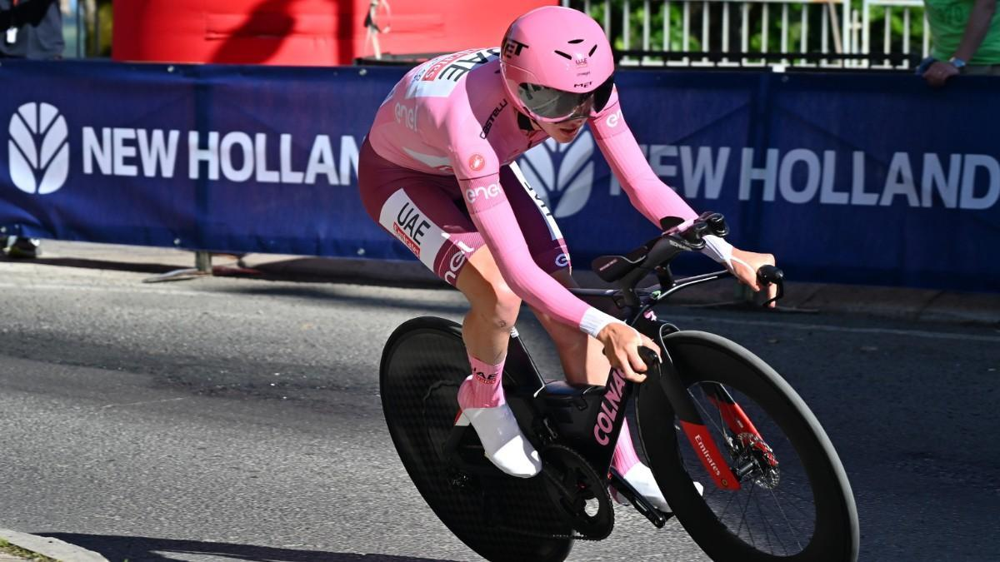
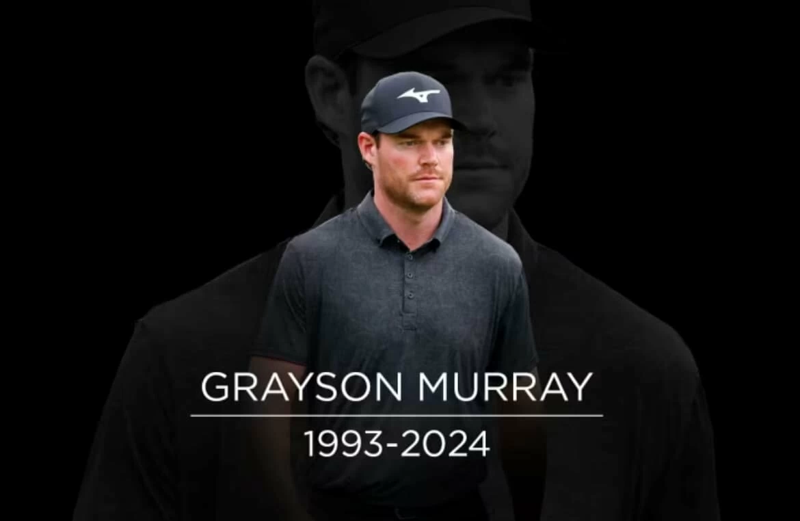
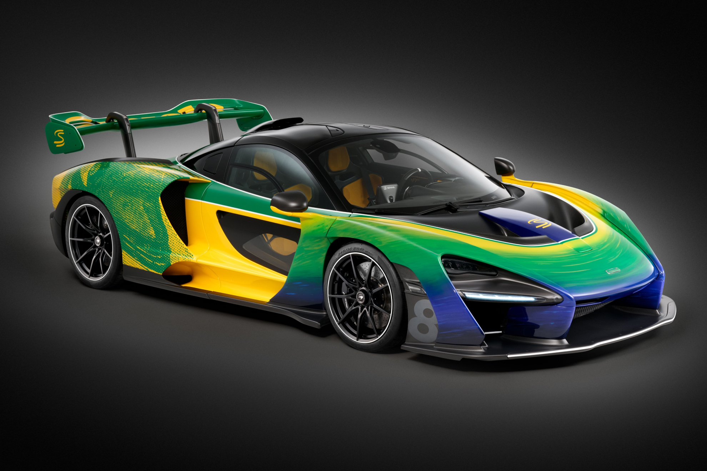
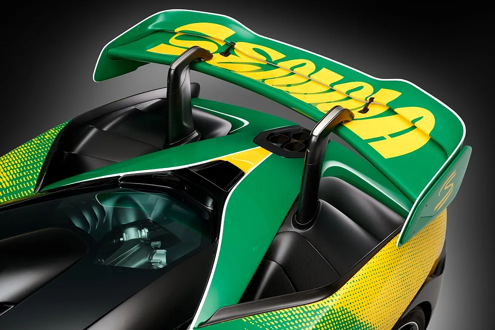
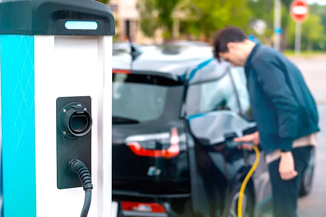
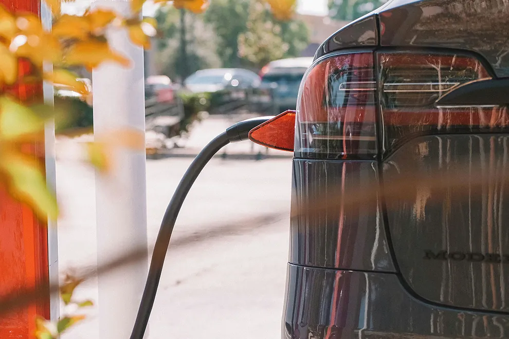

El brutal nockeo de Usyk ante Fury que dio la vuelta al mundo
Celebridades de todo el mundo como Neymar, Cristiano Ronaldo o Ryan Garcia estuvieron presentes ante uno de los mejores combates de la historia del boxeo
Neymar, conocido por su pasión por los deportes más allá del fútbol, disfrutó del combate desde una posición privilegiada, compartiendo su entusiasmo en las redes sociales. Cristiano Ronaldo, siempre elegante, fue captado por las cámaras mientras observaba atentamente cada ronda, demostrando su interés por el boxeo y apoyando a sus amigos dentro de la industria deportiva. Ryan Garcia, el joven y talentoso boxeador, también se encontraba entre los asistentes, posiblemente buscando inspiración y observando técnicas de los mejores.
El combate, que tuvo lugar en un escenario repleto de glamour y sofisticación, se desarrolló con una intensidad y un dramatismo que mantuvo a todos los espectadores al borde de sus asientos. Los pugilistas demostraron una habilidad técnica y una resistencia física extraordinarias, entregando un espectáculo que será recordado por años. La presencia de tantas figuras destacadas del mundo del deporte y el entretenimiento subrayó la magnitud del evento y su importancia en la cultura deportiva global.
Al final del combate, las celebridades no dudaron en expresar su admiración y respeto por los boxeadores, quienes habían dejado todo en el ring. Las redes sociales se llenaron de mensajes y fotos del evento, con Neymar, Cristiano Ronaldo y Ryan Garcia compartiendo su experiencia y destacando la grandeza de lo que acababan de presenciar. Sin duda, este combate ha dejado una marca imborrable en la historia del boxeo y en la memoria de todos los que tuvieron la fortuna de verlo en persona.
GIRO DE ITALIA 🚴

Pogacar seduce a la reina: apaga el sueño de Nairo en Livigno y se cita con la historia
Este lunes llega la segunda jornada de descanso tras otra genial exhibición del esloveno en Livigno
Tadej Pogačar, conocido por sus impresionantes habilidades en el ciclismo, deslumbró una vez más con su rendimiento en las montañas italianas, consolidándose como uno de los favoritos en la competición.
La etapa en Livigno, caracterizada por sus exigentes ascensos y su terreno desafiante, fue testigo de la maestría de Pogačar, quien no solo demostró su resistencia y fuerza, sino también su capacidad estratégica para atacar en el momento preciso. Su actuación dejó atrás a varios de sus competidores, aumentando la brecha en la clasificación general y reafirmando su dominio en esta edición del torneo.
Los espectadores y expertos no pudieron evitar elogiar la destreza del esloveno. Su habilidad para manejar las pendientes empinadas y su inquebrantable determinación se hicieron evidentes, ya que Pogačar parecía imparable mientras avanzaba hacia la meta. Cada pedalada fue un testimonio de su arduo entrenamiento y su talento natural, aspectos que lo han catapultado a la cima del ciclismo mundial.
Con la segunda jornada de descanso a la vista, los equipos y ciclistas aprovecharán para recuperarse y preparar sus estrategias para las etapas restantes. Pogačar, sin embargo, se encuentra en una posición envidiable, con una ventaja que le permite planificar sus próximos movimientos con relativa tranquilidad. No obstante, el ciclismo es un deporte impredecible, y la competencia seguramente traerá nuevas sorpresas y desafíos.
Mientras tanto, los aficionados seguirán hablando de la exhibición de Pogačar en Livigno, un recordatorio de por qué es considerado uno de los mejores ciclistas de su generación. Con más etapas emocionantes por delante, todos los ojos estarán puestos en él, esperando ver si puede mantener su impresionante forma y llevarse el título al final de la competición.
Golf 🏌

El deporte llora a Grayson Murray ¿Qué lleva al suicidio a un exitoso deportista?
Grayson Murray, que parecía haber superado una fase depresiva, se quitó la vida apenas cuatro meses después de haber vuelto a ganar
Grayson Murray llevaba acumulados 2,42 millones de dólares según la lista del PGA Tour en 2024. Había ganado en enero el Sony Open en Hawai, el segundo torneo del año, con un putt de 14 metros en el desempate; había sido décimo en el Wells Fargo la semana pasada. Era el 58 del mundo y en dos semanas, por primera vez en su carrera, iba a enlazar tres grandes seguidos jugados con su participación en el US Open. Hablaba de que estaba curado. Pero en la madrugada del sábado se quitó la vida en un hotel de Texas.
Murray se había movido en el alambre en los últimos años. Jugaba al golf y bebía. "¿Que por qué estaba bebido? Porque soy un maldito alcohólico que odia todo lo que tiene que ver con la vida en el PGA Tour y esa es mi vía de escape. No han sido los que me llevaron a la bebida, pero en cinco años no he recibido una sola ayuda de ellos más allá de 'nos comunicaremos con usted", soltó cuando el PGA Tour le suspendió por conducta indecorosa en 2021 después de un altercado ebrio en un bar de Hawai.
"Siempre me veía a mí mismo como un fracasado. Pensaba que tenía mucho talento, pero que sólo sabía desperdiciarlo"
No era la primera advertencia. En 2017 había recibido otra multa por verter críticas a Bryson DeChambeau y otros comentarios fuera de lugar. Con esa personalidad histriónica había provocado el sonrojo de los dirigentes del circuito cuando, como motivación dijo, ofreció a una modelo de playboy ser su caddie en los pares 3 del Masters de Augusta, torneo al que no accedió hasta en 2024 cuando ya parecía estar curado de este tormentoso pasado
Formula 1 🏎

McLaren Senna Sempre, el súper deportivo para homenajear a Ayrton
McLaren ha aprovechado la celebración del GP de Mónaco para exhibir un Senna único cuya decoración es un puro homenaje al tres veces campeón del mundo de Fórmula 1.
Ayrton Senna ha alcanzado tal grado de icono, que no paran de sucederse los homenajes cuando se cumplen los 30 años de su repentina desaparición. Y entre estos homenajes no podía faltar el de la propia McLaren, la marca para la que corrió entre 1988 y 1993 y con la que ganó tres Campeonatos del Mundo de Fórmula 1.
En McLaren han sabido escoger muy bien el 'dónde', y será en Mónaco, lugar en el que el brasileño ganó cinco veces, donde podremos ver lo que han preparado para honrar al brasileño. No nos sorprende que la decoración de los coches que conducirán Lando Norris y Oscar Piastri en el Principado luzcan de amarillo y verde. De hecho, un equipo puede cambiar su decoración, por ejemplo, en función de intereses puntuales de sus patrocinadores. Pero en el homenaje no podía faltar una unidad del McLaren Senna de calle pintada con esos mismos tonos, pero todavía con muchos más detalles conmemorativos.

Por un lado incluye los tonos verdes, azules y amarillos de la bandera brasileña mediante una técnica desarrollada por MSO que permite que las pinturas se mezclen sin crear colores adicionales. Todo para evocar velocidad y el movimiento de una bandera de Brasil que está siendo ondeada por el viento
Industria 🔌

Uno de cada cinco puntos de recarga públicos de coches en España no funciona
El Barómetro de Electromovilidad de ANFAC correspondiente al primer trimestre de 2024 demuestra que seguimos en el vagón de cola en cuanto a electrificación en Europa.
Como cada trimestre, la Asociación Nacional de Fabricantes de Automóviles y Camiones (ANFAC) ha sacado su Barómetro de Electromovilidad. Y los datos, que resultan desalentadores, muestran cómo España está casi a la cola de Europa por lo que toca a electrificación del automóvil
Llama la atención que uno de cada cinco puntos de recarga pública de vehículos esté fuera de servicio, bien porque está averiado o porque se ha instalado pero todavía no se ha conectado a la red eléctrica. En concreto hay 8.645 puntos en estas condiciones, de los 41.967 que conforman el total (deberían ser 64.000 para alcanzar los objetivos), lo que supone que no podremos recargar en el 21% de los conectores.

Además, de los 32.422 puntos de recarga en funcionamiento solo 2.103 lo son ultra rápidos (con una potencia igual o superior a 150 kW) lo que representa un 6,5% del total. Y solo 25% de los puntos públicos son superiores a 22 kW, cuando según las previsiones este año deberían ser un 51% los superiores a 22 kW. Así, y con un 75% de puestos de baja potencia, lo normal es que cada recarga exija una duración mínima de tres horas.